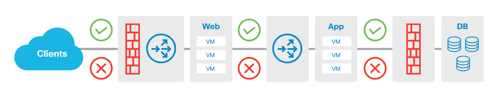
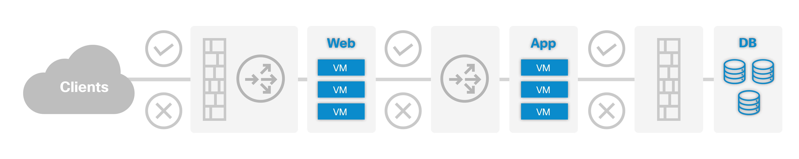
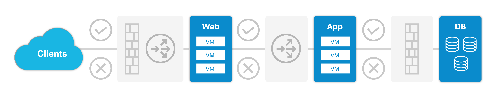
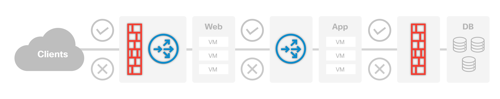
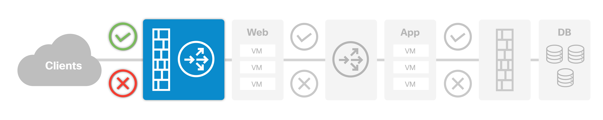
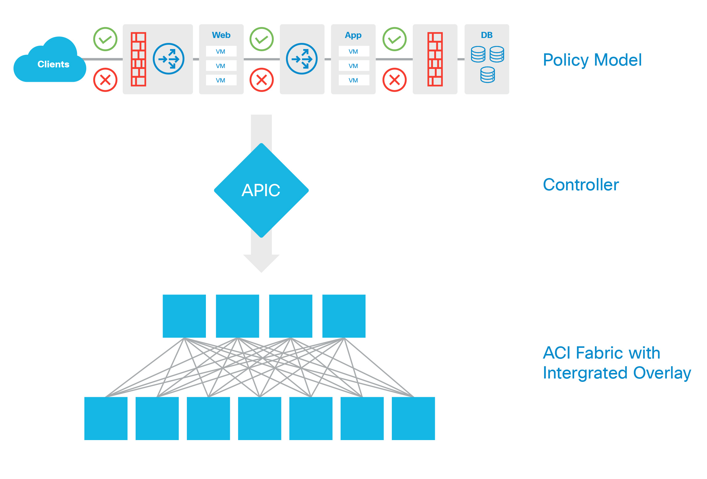
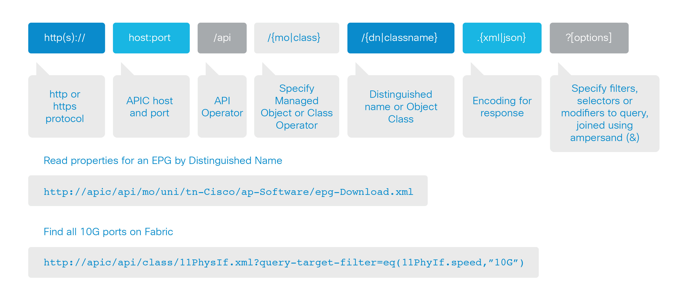

ACI Policy Model¶
- Abstraction Model
- Everything is an Object
- Relevant Objects and Relationships
- Hierarchical ACI Object Model and the Infrastructure
- Infrastructure as Objects
- Build object, use object to build policy, reuse policy
- REST API just exposes the object model
- Logical model, Resolved model, concrete model
- Formed and Unformed Relationships
- Declarative End State and Promise Theory
While the comprehensive policy model that ACI utilizes is broad, the goal of this chapter is to introduce the reader to a basic level of understanding about the model, what it contains and how to work with it. The complete object model contains a vast amount of information that represents a complete hierarchy of data center interactions, so it is recommended that the reader take the time to review the many white papers available on cisco.com, or for the most extensive information resource available, review the APIC Management Information Model Reference packaged with the APIC itself.
Abstraction Model¶
ACI provides the ability to create a stateless definition of application requirements. Application architects think in terms of application components and interactions between such components; not necessarily thinking about networks, firewalls and other services. By abstracting away the infrastructure, application architects can build stateless policies and define not only the application, but also Layer 4 through 7 services and interactions within applications. Abstraction also means that the policy defining application requirements is no longer tied to traditional network constructs, and thus removes dependencies on the infrastructure and increases the portability of applications.
The application policy model defines application requirements, and based on the specified requirements, each device will instantiate a set of required changes. IP addresses become fully portable within the fabric, while security and forwarding are decoupled from any physical or virtual network attributes. Devices autonomously and consistently update the state of the network based on the configured policy requirements set within the application profile definitions.
Everything is an Object¶
The abstracted model utilized in ACI is object-oriented, and everything in the model is represented as an object, each with properties relevant to that object. As is typical for an object-oriented system, these objects can be grouped, classed, read, and manipulated, and objects can be created referencing other objects. These objects can reference relevant application components as well as relationships between these components. The rest of this section will describe the elements of the model, the objects inside, and their relationships at a high level.
Relevant Objects and Relationships¶
Within the ACI application model, the primary object that encompasses all of the objects and their relationships to each other is called an Application Profile, or AP. Some readers are certain to think, “a 3-tier app is a unicorn,” but in this case, the idea of a literal 3-tier application works well for illustrative purposes. Below is a diagram of an AP shown as a logical structure for a 3-tier application that will serve well for describing the relevant objects and relationships.
{kind=link}
From left to right, in this 3-tier application there is a group of clients that can be categorized and grouped together. Next there is a group of web servers, followed by a group of application servers, and finally a group of database servers. There exist relationships between each of these independent groups. For example, from the clients to the application servers, there are relationships that can be described in the policy which can include things such as QoS, ACLs, Firewall and Server Load Balancing service insertion. Each of these things is defined by managed objects, and the relationships between them are used to build out the logical model, then resolve them into the hardware automatically.
Endpoints are objects that represent individual workload engines (i.e. virtual or physical machines, etc.). The following diagram emphasizes which elements in the policy model are endpoints, which include web, application and database virtual machines.
{kind=link}
These endpoints are logically grouped together into another object called an Endpoint Group, or EPG. The following diagram highlights the EPG boundaries in the diagram, and there are four EPGs - Clients, Web servers, Application servers, and Database servers.
{kind=link}
There are also Service Nodes that are referenceable objects, either physical or virtual, such as Firewalls, and Server Load Balancers (or Application Delivery Controllers/ADC), with a firewall and load balancer combination chained between the client and web EPGs, a load balancer between the web and application EPGs, and finally a firewall securing traffic between the application and database EPGs.
{kind=link}
A group of Service Node objects can be logically chained into a sequence of services represented by another object called a Service Graph. A Service Graph object provides compound service chains along the data path. The diagram below shows where the Service Graph objects are inserted into a policy definition, emphasizing the grouped service nodes in the previous diagram.

With objects defined to express the essential elements of the application, it is possible to build relationships between the EPG objects, using another object called a Contract. A Contract defines what provides a service, what consumes a service and what policy objects are related to that consumption relationship. In the case of the relationship between the clients and the web servers, the policy defines the communication path and all related elements of that. As shown in the details of the example below, the Web EPG provides a service that the Clients EPG consumes, and that consumption would be subject to a Filter (ACL) and a Service Graph that includes Firewall inspection services and Server Load Balancing.
{kind=link}
A concept to note is that ACI fabrics are built on the premise of a whitelist security approach, which allows the ACI fabric to function as a semi-stateful firewall fabric. This means communication is implicitly denied, and that one must build a policy to allow communication between objects or they will be unable to communicate. In the example above, with the contract in place as highlighted, the Clients EPG can communicate with the Web EPG, but the Clients cannot communicate with the App EPG or DB EPGs. This is not explicit in the contract, but native to the fabric’s function.
Hierarchical ACI Object Model and the Infrastructure¶
The APIC manages a distributed managed information tree (dMIT). The dMIT discovers, manages, and maintains the whole hierarchical tree of objects in the ACI fabric, including their configuration, operational status, and accompanying statistics and associated faults.
The Cisco ACI object model structure is organized around a hierarchical tree model, called a distributed Management Infrastructure Tree (dMIT). The dMIT is the single source of truth in the object model, and is used in discovery, management and maintenance of the hierarchical model, including configuration, operational status and accompanying statistics and faults.
As mentioned before, within the dMIT, the Application Profile is the modeled representation of an application, network characteristics and connections, services, and all the relationships between all of these lower-level objects. These objects are instantiated as Managed Objects (MO) and are stored in the dMIT in a hierarchical tree, as shown below:

All of the configurable elements shown in this diagram are represented as classes, and the classes define the items that get instantiated as MOs, which are used to fully describe the entity including its configuration, state, runtime data, description, referenced objects and lifecycle position.
Each node in the dMIT represents a managed object or group of objects. These objects are organized in a hierarchical structure, similar to a structured file system with logical object containers like folders. Every object has a parent, with the exception of the top object, called “root”, which is the top of the tree. Relationships exist between objects in the tree.
{kind=link}
Objects include a class, which describes the type of object such as a port, module or network path, VLAN, Bridge Domain, or EPG. Packages identify the functional areas to which the objects belong. Classes are organized hierarchically so that, for example, an access port is a subclass of the class Port, or a leaf node is a subclass of the class Fabric Node.
Managed Objects can be referenced through relative names (Rn) that consist of a prefix matched up with a name property of the object. As an example, a prefix for a Tenant would be “tn” and if the name would be “Cisco”, that would result in a Rn of “tn-Cisco” for a MO.
Managed Objects can also be referenced via Distinguished Names (Dn), which is the combination of the scope of the MO and the Rn of the MO, as mentioned above. As an example, if there is a tenant named “Cisco” that is a policy object in the top level of the Policy Universe (polUni), that would combine to give us a Dn of “uni/tn-Cisco”. In general, the DN can be related to a fully qualified domain name.
Because of the hierarchical nature of the tree, and the attribute system used to identify object classes, the tree can be queried in several ways for MO information. Queries can be performed on an object itself through its DN, on a class of objects such as switch chassis, or on a tree-level, discovering all members of an object.
The structure of the dMIT provides easy classification of all aspects of the relevant configuration, as the application objects are organized into related classes, as well as hardware objects and fabric objects into related classes that allow for easy reference, reading and manipulation from individual object properties or multiple objects at a time by reference to a class. This allows configuration and management of multiple similar components as efficiently as possible with a minimum of iterative static configuration.
Infrastructure as Objects¶
ACI uses a combination of Cisco Nexus 9000 Series Switch hardware and Application Policy Infrastructure Controllers for policy-based fabric configuration and management. These infrastructure components can be integrated with Cisco and third-party service products to automatically provision end-to-end network solutions.
As shown in the following diagram, the logical policy model is built through manipulation of the dMIT, either through direct GUI, programmatic API, or through traditional CLI methods. Once the policy is built, the intention of the policy gets resolved into an abstract model, then is conferred to the infrastructure elements. The infrastructure elements contain specific Cisco ASIC hardware that make them equipped, purpose-built agents of change that can understand the abstraction that the policy controller presents to it, and automate the relevant concrete configuration based on the abstract model. This configuration gets applied when an endpoint connects to the fabric and first transmits traffic.
{kind=link}
The purpose-built hardware providing the intelligent resolution of policy configuration is built on a spine-leaf architecture providing consistent network forwarding and deterministic latency. The hardware is also able to normalize the encapsulation coming in from multiple different endpoints regardless of the type connectivity.
If an endpoint connects to a fabric with an overlay encapsulation (such as VXLAN), uses physical port connectivity or VLAN 802.1Q tagging, the fabric can take accept that traffic, de-encapsulate, then re-encapsulate it to VXLAN for fabric forwarding, then de-encapsulate and re-encapsulate to whatever the destination expects to see. This gateway function of encapsulation normalization happens at optimized hardware speeds in the fabric and creates no additional latency or software gateway penalty to perform the operation outside of the fabric.
In this manner, if a VM is running on VMWare ESX utilizing VXLAN, and a VM running on Hyper-V using VLAN 802.1Q encapsulation, and a physical server running a bare metal database workload on top of Linux, it is possible to configure policy to allow each of these to communicate directly to each other without having to bounce to any separate gateway function.
This automated provisioning of end-to-end application policy provides consistent implementation of relevant connectivity, quality measures, and security requirements. This model is extensible, and has the potential capability to be extended into compute and storage for complete application policy-based provisioning.
The automation of the configuration takes the Logical model, and translates it into other models, such as the Resolved model and the Concrete model (Covered later in this chapter). The automation process resolves configuration information into the object and class-based configuration elements that then get applied based on the object and class. As an example, if the system is applying a configuration to a port or a group of ports, the system would likely utilize a class-based identifier to apply configuration broadly without manual iteration. As an example, a class is used to identify objects like cards, ports, paths, etc; port Ethernet 1/1 is a member of class port and a type of port configuration, such as an access or trunk port is a subclass of a port. A leaf node or a spine node is a subclass of a fabric node, and so forth.
The types of objects and relationships of the different networking elements within the policy model can be seen in the diagram below. Each of these elements can be managed via the object model being manipulated through the APIC, and each element could be directly manipulated via REST API.

Build object, use object to build policy, reuse policy¶
The inherent model of ACI is built on the premise of object structure, reference and reuse. In order to build an AP, one must first create the building blocks with all the relevant information for those objects. Once those are created, it is possible to build other objects referencing the originally created objects as well as reuse other objects. As an example, it is possible to build EPG objects, use those to build an AP object, and reuse the AP object to deploy to different tenant implementations, such as a Development Environment AP, a Test Environment AP, and a Production Environment AP. In the same fashion, an EPG used to construct a Test AP may later be placed into a Production AP, accelerating the time to migrate from a test environment into production.
REST API just exposes the object model¶
REST stands for Representative State Transfer, and is a reference model for direct object manipulation via HTTP protocol based operations.
The uniform ACI object model places clean boundaries between the different components that can be read or manipulated in the system. When an object exists in the tree, whether it is an object that was derived from discovery (such as a port or module) or from configuration (such as an EPG or policy graph), the objects then would be exposed via the REST API via a Universal Resource Indicator (URI). The structure of the REST API calls is shown below with a couple of examples.
{kind=link}
The general structure of the REST API commands is seen at the top. Below the general structure two specific examples of what can done with this structured URI.
Logical model, Resolved model, concrete model¶
Within the ACI object model, there are essentially three stages of implementation of the model: the Logical Model, the Resolved Model, and the Concrete Model.
The Logical Model is the logical representation of the objects and their relationships. The AP that was discussed previously is an expression of the logical model. This is the declaration of the “end-state” expression that is desired when the elements of the application are connected and the fabric is provisioned by the APIC, stated in high-level terms.
The Resolved Model is the abstract model expression that the APIC resolves from the logical model. This is essentially the elemental configuration components that would be delivered to the physical infrastructure when the policy must be executed (such as when an endpoint connects to a leaf).
The Concrete Model is the actual in-state configuration delivered to each individual fabric member based on the resolved model and the Endpoints attached to the fabric.
In general, the logical model should be the high-level expression of what exists in the resolved model, which should be present on the concrete devices as the concrete model expression. If there is any gap in these, there will be inconsistent configurations.
Formed and Unformed Relationships¶
In creating objects and forming their relationships within the ACI fabric, a relationship is expressed when an object is a provider of a service, and another object is a consumer of that provided service. If a relationship is formed and one side of the service is not connected, the relationship would be considered to be unformed. If a consumer exists with no provider, or a provider exists with no consumer, this would be an unformed relationship. If both a consumer and provider exist and are connected for a specific service, that relationship is fully formed.
Declarative End State and Promise Theory¶
For many years, infrastructure management has been built on a static and inflexible configuration paradigm. In terms of theory, traditional configuration via traditional methods (CLI configuration of each box individually) where configuration must be done on every device for every possibility of every thing prior to this thing connecting, is termed an Imperative Model of configuration. In this model, due to the way configuration is built for eventual possibility, the trend is to overbuild the infrastructure configuration to a fairly significant amount. When this is done, fragility and complexity increase with every eventuality included.
{kind=link}
Similar to what is illustrated above, if configuration must be made on a single port for an ESXi host, it must be configured to trunk all information for all of the possible VLANs that might get used by a vSwitch or DVS on the host, whether or not a VM actually exists on that host. On top of that, additional ACLs may need to be configured for all possible entries on that port, VLAN or switch to allow/restrict traffic to/from the VMs that might end up migrating to that host/segment/switch. That is a fairly heavyweight set of tasks for just some portions of the infrastructure, and that continues to build as peripheral aspects of this same problem are evaluated. As these configurations are built, hardware resource tables are filled up even if they are not needed for actual forwarding. Also reflected are configurations on the service nodes for eventualities that can build and grow, many times being added but rarely ever removed. This eventually can grow into a fairly fragile state that might be considered a form of firewall house of cards. As these building blocks are built up over time and a broader perspective is taken, it becomes difficult to understand which ones can be removed without the whole stack tumbling down. This is one of the possible things that can happen when things are built on an imperative model.
{kind=link}
On the other hand, a declarative mode allows a system to describe the “end-state” expectations system-wide as depicted above, and allows the system to utilize its knowledge of the integrated hardware and automation tools to execute the required work to deliver the end state. Imagine an infrastructure system where statements of desire can be made, such as “these things should connect to those things and let them talk in this way”, and the infrastructure converges on that desired end state. When that configuration is no longer needed, the system knows this and removes that configuration.
{kind=link}
Promise Theory is built on the principles that allow for systems to be designed based on the declarative model. It’s built on voluntary execution by autonomous agents which provide and consume services from one another based on promises.
As the IT industry continues to build and scale more and more, information and systems are rapidly reaching breaking points where scaled-out infrastructure cannot stretch to the hardware resources without violating the economic equilibrium, nor scale-in the management without integrated agent-based automation. This is why Cisco ACI, as a system built on promise theory, is a purpose-built system for addressing scale problems that are delivery challenges with traditional models.